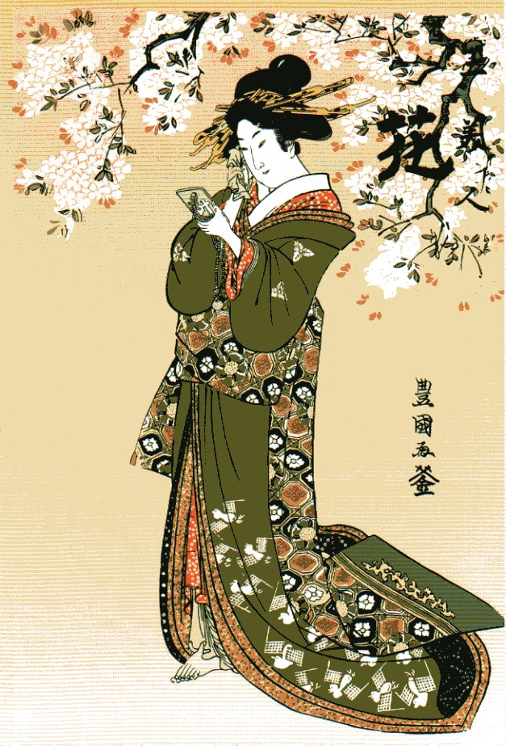
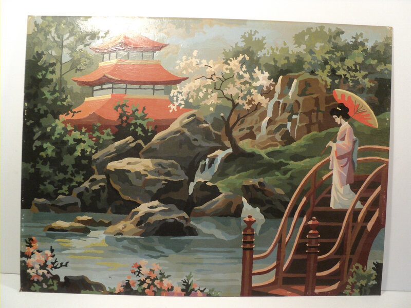

Elle crée des bandes dessinées pour filles le shojo manga.
Katshushika HOKUSAI est un peintre, dessinateur et graveurLes estampes japonaises (1869-1912) : l'ére Meiji.
C'est une riche palette de couleurs. L'Ukiyo "monde flottant,"

Les Arts et Traditions japonaises sont l'haiku,
l'origami,la calligraphie, l'ikebana, les jardins japonais.
l'haiku est un poème japonais très court généralement de 3
vers et faisant allusion aux saisons.
l'origami est un art né en Chine qui consiste à créer des
objets uniquement avec du papier plié.
Certains modèles complexes sont l'oeuvre de maîtres reconnus
dans l'art de l'origami.
L'ikena, également connu sous le nom de kado, "la voie des fleurs"
ou "l'art de faire vivre les fleurs," est un art traditionnel japonais
fondé sur la composition florale. La structure complète de l'arrangement
floral est axée sur trois points principaux symbolisant le ciel, la terre et
l'humanité à travers les trois piliers, asymétrie, espace et profondeur.

Elle crée des bandes dessinées pour filles le shojo manga.
Katshushika HOKUSAI est un peintre, dessinateur et graveurLes estampes japonaises (1869-1912) : l'ére Meiji.
C'est une riche palette de couleurs. L'Ukiyo "monde flottant,"
Kyosai, fils de samouraï, a commencé à étudier la peinture à
un jeune âge. En 1878, il a terminé le tableau Tigre, qui est
devenu l'une des peintures japonaises les plus célèbres de l'histoire.